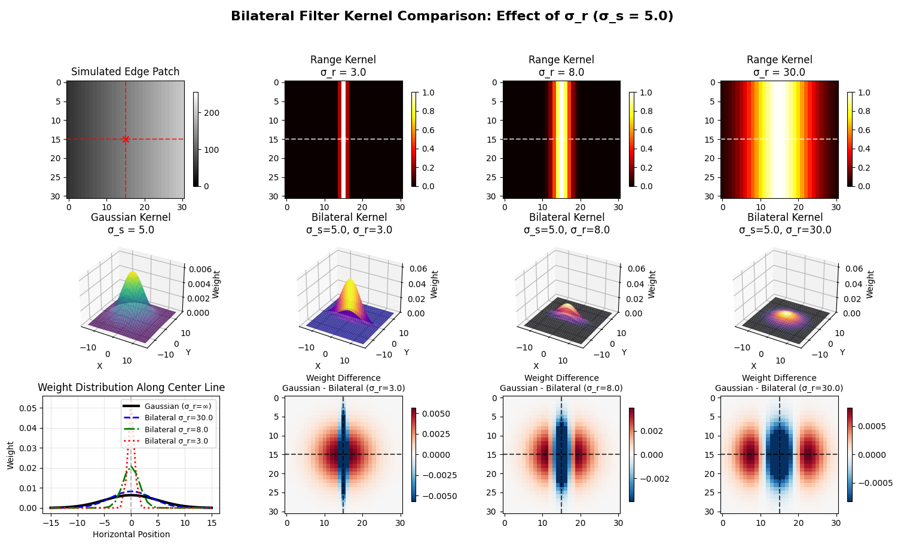
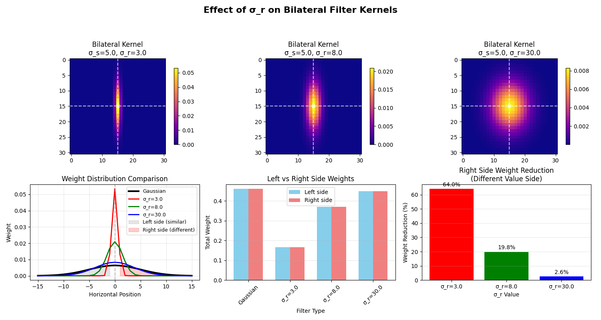

第一幅图（3×4 的综合对比图）是在“解剖”双边滤波的卷积核。左上角是一块模拟的灰度边缘区域，中间有一条从暗到亮的垂直过渡线，红色十字标记的是当前像素位置。第一行右侧的三张热力图展示了在不同 σ_r（值域标准差）下， 仅由灰度差决定的值域权重 ：σ_r 越小，只有与中心像素灰度非常接近的位置才会有较高权重；σ_r 越大，灰度差异被“容忍”，高权重区域变宽。第二行展示的是三维视角下的核形状：左边是只考虑空间距离的高斯核，右边三张是“空间高斯 × 值域高斯”得到的双边核，可以看到在边缘一侧（灰度不同的一边）权重被明显压低。第三行左图给出了水平方向中心行的权重曲线，对比了高斯和三个双边核的形状；第三行右侧三张图则直接画出“高斯核 − 双边核”的差值热图，用红蓝两色强调：双边滤波在边缘另一侧削弱了多少权重，从而定量地体现出它的“保边”能力。

第二幅图是对双边核的一个“信息化总结”，重点解释 σ_r 如何在整体上改变权重分布 。第一行三张图是不同 σ_r 下双边核的 2D 热力图，直观展示随着 σ_r 增大，核从“沿着边缘一侧收缩的瘦峰”逐渐变成类似普通高斯的宽峰。第二行左图再次用曲线叠加的方式对比高斯核和三种双边核在水平方向上的中心行权重，同时用灰色与红色的填充区域分别标出“同一侧”（灰度相近的一边）和“另一侧”（灰度不同的一边）的权重区间。第二行中间的柱状图统计了高斯与各个双边核在边缘两侧的总权重，把“左/右两侧权重比例”可视化；第二行右侧的柱状图则给出在“不同值一侧”上，双边核相对于高斯核削弱权重的百分比。综合来看，这幅图说明：σ_r 越小，跨越边缘的权重削弱得越厉害（边缘保留越强）；σ_r 越大，双边核越接近普通高斯，跨边缘的模糊越明显。

```python import numpy as np import matplotlib.pyplot as plt from matplotlib import cm
patch_size = 31 center = patch_size // 2
edge_patch = np.zeros((patch_size, patch_size)) for i in range(patch_size): edge_patch[i, :] = np.linspace(50, 200, patch_size) # 从左(50)到右(200)渐变
center_pixel_value = edge_patch[center, center]
sigma_s = 5.0 # 空间标准差 sigma_r_values = [3.0, 8.0, 30.0] # 三个不同的值域标准差：小、中、大 kernel_radius = 15
y, x = np.meshgrid(np.arange(-kernel_radius, kernel_radius+1), np.arange(-kernel_radius, kernel_radius+1))
gaussian_kernel = np.exp(-(x2 + y2) / (2 * sigma_s**2)) gaussian_kernel /= gaussian_kernel.sum() # 归一化
bilateral_kernels = [] range_kernels = []
for sigma_r in sigma_r_values: # 提取以中心像素为中心的局部区域 local_patch = edge_patch[center-kernel_radius:center+kernel_radius+1, center-kernel_radius:center+kernel_radius+1]
# 计算值域权重
intensity_diff = local_patch - center_pixel_value
range_kernel = np.exp(-(intensity_diff**2) / (2 * sigma_r**2))
range_kernels.append(range_kernel)
# 组合空间和值域权重
bilateral_kernel = gaussian_kernel * range_kernel
bilateral_kernel /= bilateral_kernel.sum() # 归一化
bilateral_kernels.append(bilateral_kernel)
fig = plt.figure(figsize=(16, 10))
ax1 = plt.subplot(3, 4, 1) im1 = ax1.imshow(edge_patch, cmap='gray', vmin=0, vmax=255) ax1.set_title('Simulated Edge Patch', fontsize=12) ax1.axvline(x=center, color='r', linestyle='--', alpha=0.7) ax1.axhline(y=center, color='r', linestyle='--', alpha=0.7) ax1.scatter(center, center, c='red', s=50, marker='x') plt.colorbar(im1, ax=ax1, shrink=0.8)
for idx, (sigma_r, range_kernel) in enumerate(zip(sigma_r_values, range_kernels)): ax = plt.subplot(3, 4, idx+2) im = ax.imshow(range_kernel, cmap='hot', vmin=0, vmax=1) ax.set_title(f'Range Kernel\nσ_r = {sigma_r}', fontsize=12) ax.axvline(x=kernel_radius, color='w', linestyle='--', alpha=0.7) ax.axhline(y=kernel_radius, color='w', linestyle='--', alpha=0.7) ax.scatter(kernel_radius, kernel_radius, c='white', s=30, marker='x') plt.colorbar(im, ax=ax, shrink=0.8)
ax_gauss_3d = fig.add_subplot(3, 4, 5, projection='3d') surf_gauss = ax_gauss_3d.plot_surface(x, y, gaussian_kernel, cmap=cm.viridis, linewidth=0, antialiased=True, alpha=0.8) ax_gauss_3d.set_title(f'Gaussian Kernel\nσ_s = {sigma_s}', fontsize=12) ax_gauss_3d.set_xlabel('X') ax_gauss_3d.set_ylabel('Y') ax_gauss_3d.set_zlabel('Weight') ax_gauss_3d.view_init(elev=30, azim=-60)
for idx, (sigma_r, bilateral_kernel) in enumerate(zip(sigma_r_values, bilateral_kernels)): ax = fig.add_subplot(3, 4, 6+idx, projection='3d') surf = ax.plot_surface(x, y, bilateral_kernel, cmap=cm.plasma if idx==0 else cm.magma if idx==1 else cm.inferno, linewidth=0, antialiased=True, alpha=0.8) ax.set_title(f'Bilateral Kernel\nσ_s={sigma_s}, σ_r={sigma_r}', fontsize=12) ax.set_xlabel('X') ax.set_ylabel('Y') ax.set_zlabel('Weight') ax.view_init(elev=30, azim=-60)
# 统一z轴范围
z_max = max(gaussian_kernel.max(), max([k.max() for k in bilateral_kernels]))
ax.set_zlim(0, z_max * 1.2)
ax_profile = plt.subplot(3, 4, 9)
center_row_gaussian = gaussian_kernel[kernel_radius, :] center_row_bilateral_small = bilateral_kernels[0][kernel_radius, :] center_row_bilateral_medium = bilateral_kernels[1][kernel_radius, :] center_row_bilateral_large = bilateral_kernels[2][kernel_radius, :]
x_positions = np.arange(-kernel_radius, kernel_radius + 1)
ax_profile.plot(x_positions, center_row_gaussian, 'k-', linewidth=3, label='Gaussian (σ_r=∞)') ax_profile.plot(x_positions, center_row_bilateral_large, 'b--', linewidth=2, label=f'Bilateral σ_r={sigma_r_values[2]}') ax_profile.plot(x_positions, center_row_bilateral_medium, 'g-.', linewidth=2, label=f'Bilateral σ_r={sigma_r_values[1]}') ax_profile.plot(x_positions, center_row_bilateral_small, 'r:', linewidth=2, label=f'Bilateral σ_r={sigma_r_values[0]}') ax_profile.axvline(x=0, color='gray', linestyle='--', alpha=0.5) ax_profile.set_xlabel('Horizontal Position') ax_profile.set_ylabel('Weight') ax_profile.set_title('Weight Distribution Along Center Line', fontsize=12) ax_profile.legend(fontsize=9) ax_profile.grid(True, alpha=0.3)
for idx, (sigma_r, bilateral_kernel) in enumerate(zip(sigma_r_values, bilateral_kernels)): ax = plt.subplot(3, 4, 10+idx) weight_diff = gaussian_kernel - bilateral_kernel im = ax.imshow(weight_diff, cmap='RdBu_r', vmin=-weight_diff.max(), vmax=weight_diff.max()) ax.set_title(f'Weight Difference\nGaussian - Bilateral (σ_r={sigma_r})', fontsize=10) ax.axvline(x=kernel_radius, color='k', linestyle='--', alpha=0.7) ax.axhline(y=kernel_radius, color='k', linestyle='--', alpha=0.7) plt.colorbar(im, ax=ax, shrink=0.8)
fig.suptitle(f'Bilateral Filter Kernel Comparison: Effect of σ_r (σ_s = {sigma_s})', fontsize=16, fontweight='bold') plt.tight_layout(rect=[0, 0, 1, 0.94]) plt.show()
fig2, axes2 = plt.subplots(2, 3, figsize=(15, 8))
for idx, (sigma_r, bilateral_kernel) in enumerate(zip(sigma_r_values, bilateral_kernels)): ax = axes2[0, idx] im = ax.imshow(bilateral_kernel, cmap='plasma') ax.set_title(f'Bilateral Kernel\nσ_s={sigma_s}, σ_r={sigma_r}', fontsize=12) ax.axvline(x=kernel_radius, color='w', linestyle='--', alpha=0.7) ax.axhline(y=kernel_radius, color='w', linestyle='--', alpha=0.7) ax.scatter(kernel_radius, kernel_radius, c='white', s=30, marker='x') plt.colorbar(im, ax=ax, shrink=0.8)
ax_curve = axes2[1, 0] ax_curve.plot(x_positions, center_row_gaussian, 'k-', linewidth=3, label='Gaussian') colors = ['r', 'g', 'b'] for idx, (sigma_r, bilateral_kernel) in enumerate(zip(sigma_r_values, bilateral_kernels)): center_row = bilateral_kernel[kernel_radius, :] ax_curve.plot(x_positions, center_row, colors[idx]+'-', linewidth=2, label=f'σ_r={sigma_r}') ax_curve.axvline(x=0, color='gray', linestyle='--', alpha=0.5) ax_curve.fill_between(x_positions[x_positions<0], 0, center_row_gaussian[x_positions<0], alpha=0.2, color='gray', label='Left side (similar)') ax_curve.fill_between(x_positions[x_positions>0], 0, center_row_gaussian[x_positions>0], alpha=0.2, color='red', label='Right side (different)') ax_curve.set_xlabel('Horizontal Position') ax_curve.set_ylabel('Weight') ax_curve.set_title('Weight Distribution Comparison', fontsize=12) ax_curve.legend(fontsize=9) ax_curve.grid(True, alpha=0.3)
ax_ratio = axes2[1, 1] categories = ['Gaussian'] + [f'σ_r={r}' for r in sigma_r_values] left_weights = [gaussian_kernel[:, :kernel_radius].sum()] + \ [k[:, :kernel_radius].sum() for k in bilateral_kernels] right_weights = [gaussian_kernel[:, kernel_radius+1:].sum()] + \ [k[:, kernel_radius+1:].sum() for k in bilateral_kernels]
x_pos = np.arange(len(categories)) width = 0.35 ax_ratio.bar(x_pos - width/2, left_weights, width, label='Left side', color='skyblue') ax_ratio.bar(x_pos + width/2, right_weights, width, label='Right side', color='lightcoral') ax_ratio.set_xlabel('Filter Type') ax_ratio.set_ylabel('Total Weight') ax_ratio.set_title('Left vs Right Side Weights', fontsize=12) ax_ratio.set_xticks(x_pos) ax_ratio.set_xticklabels(categories, rotation=45) ax_ratio.legend() ax_ratio.grid(True, alpha=0.3, axis='y')
ax_reduction = axes2[1, 2] reduction_percent = [] for bilateral_kernel in bilateral_kernels: gauss_right = gaussian_kernel[:, kernel_radius+1:].sum() bilateral_right = bilateral_kernel[:, kernel_radius+1:].sum() reduction = (1 - bilateral_right/gauss_right) * 100 reduction_percent.append(reduction)
bars = ax_reduction.bar([f'σ_r={r}' for r in sigma_r_values], reduction_percent, color=['red', 'green', 'blue']) ax_reduction.set_xlabel('σ_r Value') ax_reduction.set_ylabel('Weight Reduction (%)') ax_reduction.set_title('Right Side Weight Reduction\n(Different Value Side)', fontsize=12) ax_reduction.grid(True, alpha=0.3, axis='y')
for bar, val in zip(bars, reduction_percent): height = bar.get_height() ax_reduction.text(bar.get_x() + bar.get_width()/2., height + 1, f'{val:.1f}%', ha='center', va='bottom', fontsize=10)
fig2.suptitle('Effect of σ_r on Bilateral Filter Kernels', fontsize=16, fontweight='bold') plt.tight_layout(rect=[0, 0, 1, 0.93]) plt.show()
print("="80) print("BILATERAL FILTER: EFFECT OF σ_r PARAMETER") print("="80) print(f"Edge characteristics:") print(f" Center pixel value: {center_pixel_value:.1f}") print(f" Left side average: {edge_patch[:, :center].mean():.1f}") print(f" Right side average: {edge_patch[:, center:].mean():.1f}") print(f" Value difference: {edge_patch[:, center:].mean() - edge_patch[:, :center].mean():.1f}") print()
print("GAUSSIAN FILTER (baseline):") print(f" Left weight: {gaussian_kernel[:, :kernel_radius].sum():.6f} ({gaussian_kernel[:, :kernel_radius].sum()/gaussian_kernel.sum()100:.1f}%)") print(f" Right weight: {gaussian_kernel[:, kernel_radius+1:].sum():.6f} ({gaussian_kernel[:, kernel_radius+1:].sum()/gaussian_kernel.sum()100:.1f}%)") print(f" Left/Right ratio: 1.00:1 (perfectly symmetric)") print()
for idx, (sigma_r, bilateral_kernel) in enumerate(zip(sigma_r_values, bilateral_kernels)): print(f"BILATERAL FILTER (σ_r = {sigma_r}):") left_weight = bilateral_kernel[:, :kernel_radius].sum() right_weight = bilateral_kernel[:, kernel_radius+1:].sum() total_weight = bilateral_kernel.sum()
print(f" Left weight: {left_weight:.6f} ({left_weight/total_weight*100:.1f}%)")
print(f" Right weight: {right_weight:.6f} ({right_weight/total_weight*100:.1f}%)")
print(f" Left/Right ratio: {left_weight/right_weight:.2f}:1")
# 计算权重变化
gauss_left = gaussian_kernel[:, :kernel_radius].sum()
gauss_right = gaussian_kernel[:, kernel_radius+1:].sum()
left_change = (left_weight/gauss_left - 1) * 100
right_change = (1 - right_weight/gauss_right) * 100
print(f" Left side change: {left